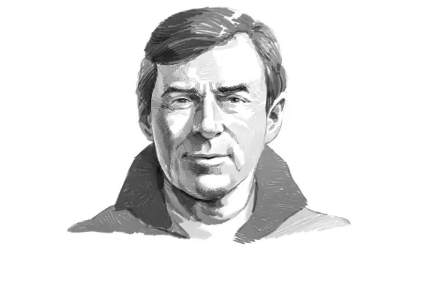
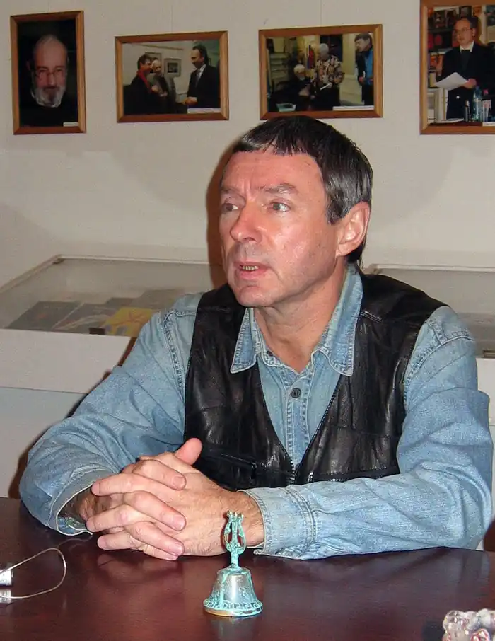

В'ячеслав Михайлович Рибаков (19 січня 1954, Ленінград) — російський вчений-східознавець, історик, письменник і сценарист.
Народився 19 січня 1954 року в Ленінграді. У 1976 році закінчив Східний факультет ЛДУ, кандидат історичних наук (1982), доктор історичних наук (2009). Працює в Санкт-Петербурзькому філіалі Інституту сходознавства РАН.
В літературі дебютував у 1979 році фантастичним оповіданням "Велика суша" ("Знання — сила", № 1). Перші авторські книги — вийшли майже одночасно в 1990 році збірка "Своя зброя" і роман "Вогнище на вежі", за які в 1991 році удостоєний премії "Старт", що присуджується авторові кращої дебютної книги фантастики. Опублікував чотиритомний коментований переклад з китайського кримінального кодексу часів династії Тан, уривки з якого цитуються в романах Хольма ван Зайчика. Член Союзу письменників СРСР з 1989 року і Союзу письменників Санкт-Петербурга з 1992 року. У 1986 році виходить знятий за сценарієм Рибакова (за сприяння Б. Стругацького) фільм "Листи мертвої людини" (реж. Костянтин Лопушанський). У 2006 році Рибаков також виступив, як сценарист ще одного фільму Лопушанського — "Бридкі лебеді" (за мотивами однойменної повісті братів Стругацьких). Лауреат Державної премії РРФСР 1987, як співавтор сценарію фільму "Листи мертвої людини", премії "Інтерпрескон" (1991, 1994, 1998), "Бронзовий равлик" (1994, 1995, 1997, 2001), імені Бєляєва (1995), "Старт "(1991), Премії імені Аркадія і Бориса Стругацьких (" АБС-премія ") (2001), Велике кільце (1993). Премія імені Гоголя (2004). Премія "Золотий кадуцей" (2007).